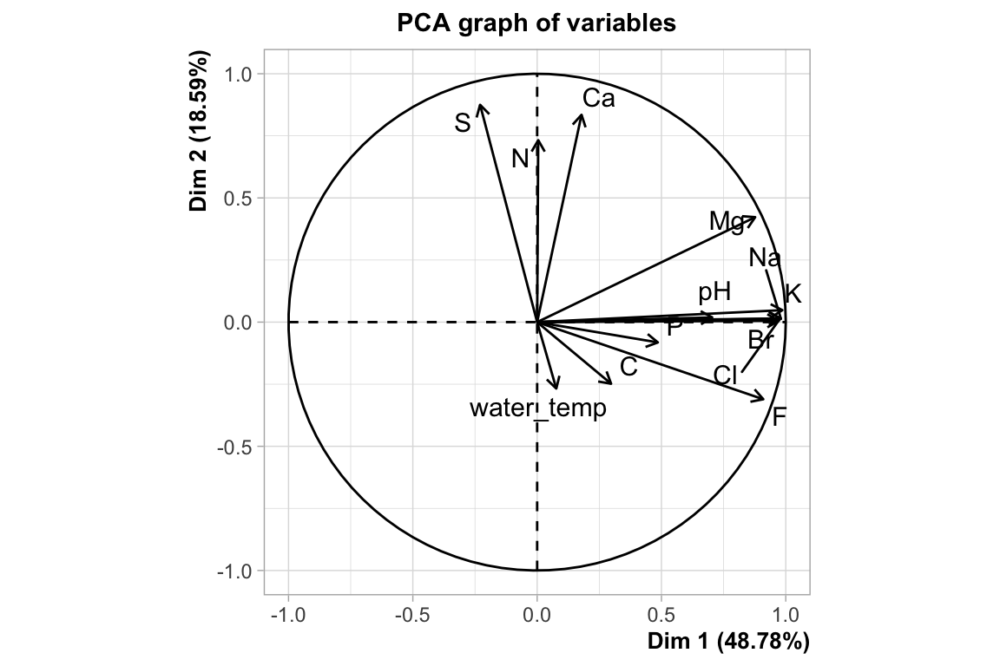
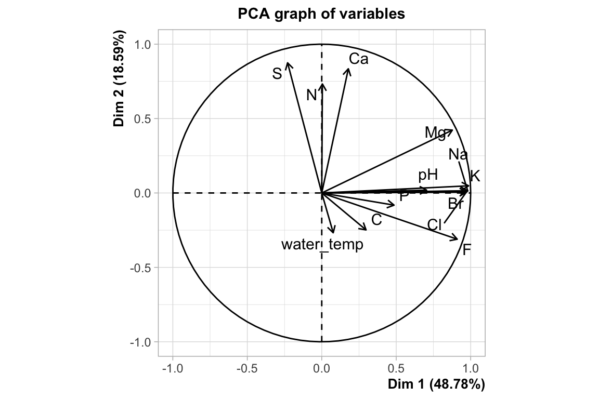
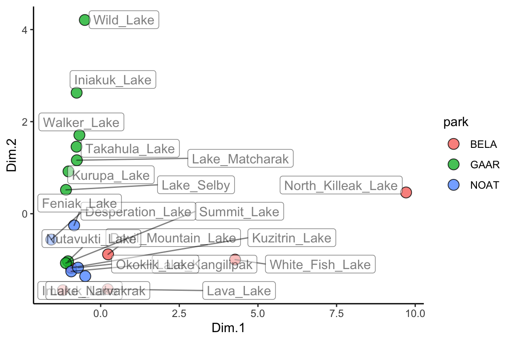
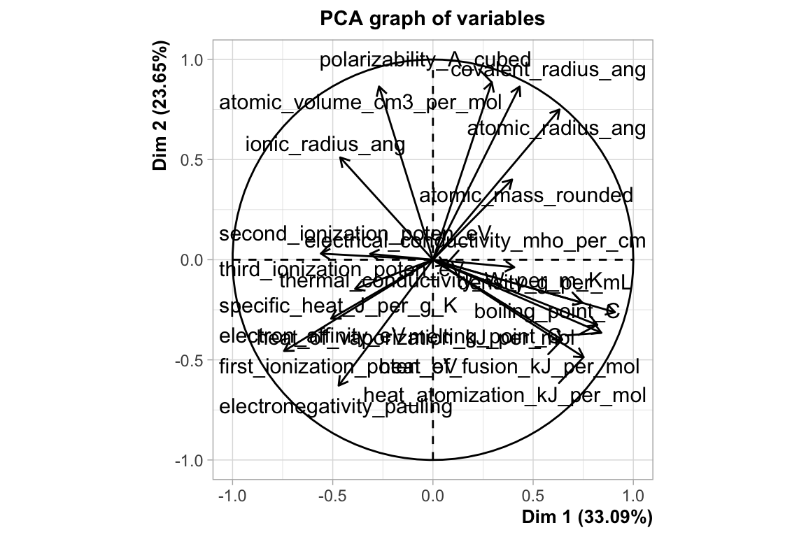
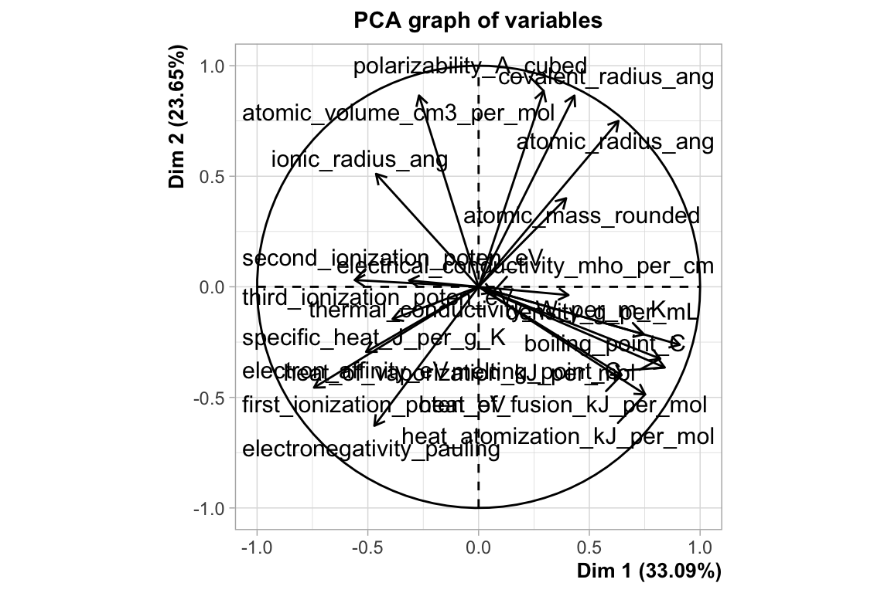

Chapter 12 Chemometrics 2
There is another way to look at our data in a cluster context - i.e. another way to identify clusters of samples that have similar properties based on the analytes in the dataset. This method is called k-means, which we will look at later, but for it we need to have a look at dimensionality reduction techniques, particularly principal components analysis (PCA). PCA looks at all the variance in a high dimensional dataset and chooses new axes within that dataset that align with the directions containing higest variance. These new axes are called principal components. Let’s look at an example:

In the example above, the three dimensional space can be reduced to a two dimensional space with the principal components analysis. New axes (principal components) are selected (bold arrows on left) that become the x and y axes in the principal components space (right).
We can run and visualize principal components analyses using the runMatrixAnalysis() function as in the example below:
AK_lakes <- read_csv("https://thebustalab.github.io/R_For_Chemists/sample_data/alaska_lake_data.csv")
head(AK_lakes)
## # A tibble: 6 x 7
## lake park water_temp pH element mg_per_L element_type
## <chr> <chr> <dbl> <dbl> <chr> <dbl> <chr>
## 1 Devil_Mountain_Lake BELA 6.46 7.69 C 3.4 bound
## 2 Devil_Mountain_Lake BELA 6.46 7.69 N 0.028 bound
## 3 Devil_Mountain_Lake BELA 6.46 7.69 P 0 bound
## 4 Devil_Mountain_Lake BELA 6.46 7.69 Cl 10.4 free
## 5 Devil_Mountain_Lake BELA 6.46 7.69 S 0.62 free
## 6 Devil_Mountain_Lake BELA 6.46 7.69 F 0.04 free
AK_lakes_analyzed <- runMatrixAnalysis(
data = AK_lakes,
analysis = c("pca"),
column_w_names_of_multiple_analytes = "element",
column_w_values_for_multiple_analytes = "mg_per_L",
columns_w_values_for_single_analyte = c("water_temp", "pH"),
columns_w_additional_analyte_info = "element_type",
columns_w_sample_ID_info = c("lake", "park")
) 

library(ggrepel)
ggplot(data = AK_lakes_analyzed, aes(x = Dim.1, y = Dim.2)) +
geom_point(aes(fill = park), shape = 21, size = 4, alpha = 0.8) +
geom_label_repel(aes(label = lake), alpha = 0.5) +
theme_classic()
It is possible that you will want access to the information that creates the ordination plot as well as the the percent variances explained by each of the principal components. These can be obtained using analysis = "pca-ord" and analysis = "pca-dim. See below:
## Parsed with column specification:
## cols(
## .default = col_double(),
## atomic_symbol = col_character(),
## state_at_RT = col_character()
## )
## See spec(...) for full column specifications. 

## # A tibble: 6 x 3
## Dim.1 Dim.2 sample_unique_ID
## <dbl> <dbl> <chr>
## 1 0.395 0.400 atomic_mass_rounded
## 2 0.840 -0.365 melting_point_C
## 3 0.908 -0.262 boiling_point_C
## 4 0.746 -0.215 density_g_per_mL
## 5 -0.471 -0.629 electronegativity_pauling
## 6 -0.743 -0.456 first_ionization_poten_eVlibrary(ggforce) ggplot(clustering) + geom_segment(aes(x = 0, y = 0, xend = Dim.1, yend = Dim.2), size = 1) + geom_circle(aes(x0 = 0, y0 = 0, r = 1)) ```